Ansichten und Grafik
Dieses Kapitel beschreibt die Ansichten des Modells, wie jede einzelne gezeichnet wird und wie sich ändern lässt, was eine Ansicht zeigt und wie: Grafikstile, Maßstab und Detail, die Schnitthöhen eines Grundrisses, Zuschneidebereiche, Ausblenden und Isolieren, Sichtbarkeit und Grafik, Filter und Ansichtsvorlagen. Linienstärken, Linienmuster und die Stile nach Kategorie werden in denselben Begriffen von den Dialogen unter Einstellungen in der Seitenleiste beschrieben.
3D-Ansichten
Ansichten ▸ Erzeugen ▸ 3D-Ansicht ▸ Standard-3D-Ansicht öffnet die Standard-3D-Ansicht, {3D}, die das gesamte Modell einfasst; erneut geöffnet, zeigt sie das Modell so, wie es verlassen wurde. Ziehen Sie, um zu orbiten (oder Umschalt und die mittlere Maustaste), ziehen Sie mit der mittleren Maustaste, um zu schwenken, und drehen Sie das Rad, um am Cursor zu zoomen; siehe Die Benutzeroberfläche.
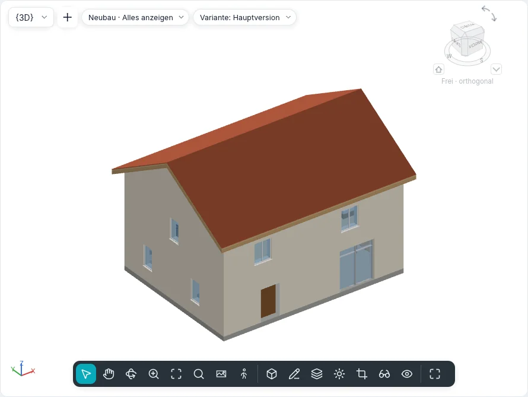
Um einen Ausschnitt zu behalten, wählen Sie Ansichten ▸ Erzeugen ▸ 3D-Ansicht ▸ Ansicht speichern: Geben Sie einen Namen ein und drücken Sie die Eingabetaste. Die neue Ansicht erscheint unter 3D-Ansichten im Projektindex und öffnet sich sofort; sie behält den Ausschnitt, mit dem sie verlassen wird. Dasselbe bewirkt das Umbenennen von {3D} im Projektindex (Rechtsklick ▸ Umbenennen…): {3D} wird zu einer benannten Ansicht, und die nächste Standard-3D-Ansicht ist eine neue {3D}.
Ein gewähltes Element wird blau überlagert und halb durchsichtig dargestellt, seine Kanten blau: Was dahinter liegt, bleibt sichtbar.
Geschossdecken schneiden die Wände, die sie durchqueren: Wo eine Decke eine Wand kreuzt, endet die Wand darunter und setzt sich darüber fort, sodass Deckenkante und Wandfläche eine einzige Fläche bilden.
Schnittbereich, Projektion und Ausrichtung
{3D} beginnt orthogonal, von der Südostecke gesehen. Rechtsklick auf den Orientierungswürfel: Prospettica oder Ortogonale, Vai all'inizio, Salva vista…, Blocca selezione (der Orbit dreht sich um die gewählten Elemente), Ripristina Fronte, Orienta su direzione (die Himmelsrichtungen und Alto), Orienta su vista (ein Grundriss, Schnitt oder eine Ansicht: die Ansicht übernimmt deren Blickpunkt, ein Schnittbereich deren Ausdehnung) und Orienta su piano… (eine Ebene, ein Raster oder eine Referenzebene).
In den Eigenschaften der 3D-Ansicht schaltet Estensioni ▸ Riquadro di sezione den Schnittbereich ein: beim ersten Mal umschließt er das sichtbare Modell. Außerhalb ist das Modell nicht zu sehen, geschnittene Teile werden an seinen Flächen Schicht für Schicht geschlossen. Ein Klick auf eine Kante wählt ihn: die sechs Pfeile verschieben eine Fläche, der Kreis oben dreht ihn. Jede Änderung ist ein Rückgängig-Schritt; ausgeschaltet behält er seine Größe. Im Projektbrowser zeigt Rechtsklick auf eine 3D-Ansicht ▸ Mostra riquadro di sezione ihn auch in Grundrissen und Schnitten, mit Griffen. Visibilità e grafica ▸ Riquadri di sezione blendet seine Darstellung aus, nicht den Schnitt.
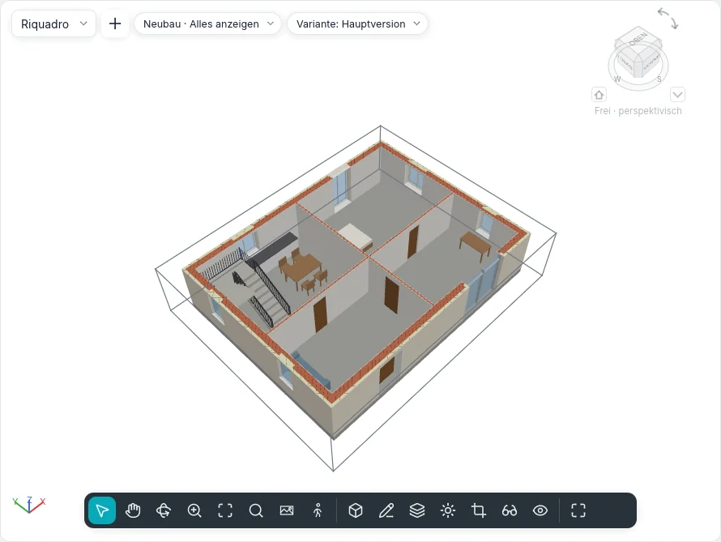
Bei Sezione bietet die Optionsleiste Tipo (Sezione edificio, Sezione di muro, Dettaglio) und Scala vista; der Browser listet die Ansicht unter dem Zweig ihres Typs. Prospetto wird mit einem Klick neben einer Wand platziert: das Symbol blickt auf sie (Tab dreht es). Rechtsklick auf Viste im Browser ▸ Organizzazione del browser… wählt, wie die Ansichten gelistet werden: nach Typ, Disziplin, Phase, Ebene, nur die nicht auf Plänen, oder eine eigene Organisation.
Die Schnittflächen zeigen das Schnittmuster des Materials; bei Detail Basso das in den
Eigenschaften gewählte Materiale poché a dettaglio basso (
Sezione wird auch in einem Schnitt, einer Ansicht oder einem Detail gezeichnet: quer zu dieser Ansicht. Rif. ad altra vista lässt den Schnitt eine bestehende Ansicht (oder eine neue freie 2D-Ansicht) öffnen statt einer eigenen; Offset verschiebt die Linie seitlich. Ist eine mit einem Klick platzierte Ansicht gewählt, zeigt ihr Symbol vier Kästchen: ein Klick schaltet die Ansicht zu dieser Seite ein oder aus (Innenansichten), der äußere Griff dreht das Symbol. Im Browser wählen Strg und Umschalt mehrere Ansichten: Applica modello vista…, Duplica und Elimina gelten für alle.
Perspektivansichten
Ansichten ▸ Erzeugen ▸ 3D-Ansicht ▸ Perspektivansicht setzt eine Kamera in einen Grundriss, einen Schnitt oder eine Ansicht. In der Optionsleiste (im BIMopen-Stil im Werkzeugbereich) stehen die Ebene und der Versatz, die Augenhöhe über der Ebene (1,60 m, wie beim Rundgang); Perspektive ist immer eingeschaltet. Der erste Klick ist der Standpunkt der Kamera; das Dreieck dessen, was sie sieht, folgt dem Cursor, und der zweite Klick ist der Zielpunkt, auf derselben Höhe. 3D-Ansicht 1 (dann 2, 3…) entsteht unter 3D-Ansichten im Projektindex und öffnet sich zugeschnitten neben dem Grundriss. In einem Schnitt oder einer Ansicht geben die zwei Klicks auch die Höhen an.
Die Ansicht wird in ihrem Zuschneidebereich in seinen Proportionen gezeichnet (240 × 160 mm auf Papier); was hinter der hinteren Schnittebene liegt (anfangs so weit wie der Zielpunkt), wird nicht gezeichnet. Ihre Eigenschaften in den Gruppen Ausdehnungen und Kamera: Ansicht zuschneiden, Zuschneidebereich sichtbar, Hintere Schnittebene und ihr Abstand, Referenzebene, Augenhöhe und Zielhöhe (von der Ebene), Sichtfeld.
Rechtsklick auf die Ansicht im Projektindex ▸ Kamera anzeigen wählt die Kamera in den Grundrissen, Schnitten und Ansichten (ebenso ein Klick auf den Rand des Zuschneidebereichs in der 3D-Ansicht). Ziehen Sie den Körper, um sie zu verschieben (mit Umschalt bleibt das Ziel), den roten Punkt, um sie zu drehen, die Ecken des Dreiecks für das Sichtfeld und das Quadrat auf seiner Basis für die hintere Schnittebene; in einer Ansicht oder einem Schnitt ändern Sie die Höhen. Die 3D-Ansicht folgt beim Ziehen, und jedes Ziehen wird mit Strg+Z rückgängig gemacht. Auf der Registerkarte Ändern | Kameras: Ziel zurücksetzen setzt das Ziel auf das Modell, das in der Mitte des Zuschneidebereichs zu sehen ist, Zuschnittgröße ändert Breite und Höhe auf Papier nach Sichtfeld (man sieht mehr) oder Maßstab (Proportionen gesperrt), Zuschnitt zurücksetzen (240 × 160 mm, 50°), Ansicht öffnen. Auch die Seiten des Zuschneidebereichs, in der 3D-Ansicht gezogen, ändern das Sichtfeld.
Die Live-Ansicht einer Kameraansicht folgt ihr, der Rundgang beginnt an ihrem Standpunkt, und beim
Verlassen bleibt die Kamera dort, wo man hingegangen ist; ein Neuer Pfad beginnt an ihrer
Position. In der Befehlszeile: camera {"from":[14,-6],"to":[5,3]} erstellt die Ansicht,
camera {"eye":[15,-6,1.6],"fov":60,"far":20} ändert sie, camera {"reset_target":true} setzt das
Ziel zurück.
Grafikstile
Die Schaltfläche Grafikstil der Ansichtssteuerungsleiste am unteren Rand jedes Ansichtsfensters bietet:
| Stil | Was gezeichnet wird |
|---|---|
| Drahtmodell | Alle Kanten, auch die hinter anderen Flächen; keine Flächen |
| Linien | Flächen als Papier und die Kanten davor in Tinte; auf dunklem Hintergrund werden Papier und Linien zusammen umgekehrt |
| Schattiert | Beleuchtete Flächen in der Farbe ihres Materials |
| Schattiert mit Kanten | Wie Schattiert, mit den Kanten davor |
| Volle Farben | Flächen in der Farbe ihres Materials, unabhängig vom Licht stets gleich |
| Realistisch | Flächen wie auf einem Foto: das Licht von Sonne und Himmel des Projekts, Spiegelungen, Umgebungsschatten, durchsichtiges Glas, Dunst |
| Pastell | Ein Aquarell: Flächen in der Farbe ihres Materials lasiert, in der Sonne nah am Papier, im Schatten tiefer; die Linien wie von Hand |
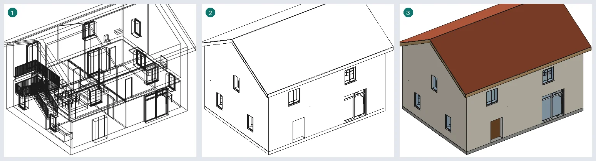
Der Stil gehört zur Ansicht und lässt sich rückgängig machen. Die Tastaturkürzel WF, HL und SD wählen Drahtmodell, Linien und Schattiert.
Die Kanten sind die tatsächlichen: dort, wo zwei Flächen im Winkel aufeinandertreffen, sowie der Umriss jeder Fläche und jeder Öffnung. Eine Wand mit einem Fenster zeigt ihren eigenen Umriss und den des Fensters, aber keine Linie dort, wo die Teile der Wand aneinanderstoßen.
Auch Grundrisse, Schnitte und Gebäudeansichten haben einen Grafikstil. Ein Grundriss wird in Linien gezeichnet, bis ein anderer Stil gewählt wird. In Linien sind die Oberflächen, geschnitten oder gesehen, nicht eingefärbt: Geschnittenes zeigt das Schnittmuster seines Materials; bei der Detailstufe Grob das Füllmuster für grobe Darstellung des Typs, sonst nur seinen Umriss. In Schattiert, Schattiert mit Kanten und Volle Farben wird jedes gesehene oder geschnittene Element mit der Schattierungsfarbe seines Materials gefüllt (ein Teil ohne Material nimmt das seiner Kategorie aus Stile nach Kategorie, sonst die Standardfarbe der Kategorie; die 3D-Ansicht folgt derselben Regel): Wände (jede Schicht, wo sie geschnitten ist), Geschossdecken, Dächer, Türen, Fenster, Möbel und Komponenten, Treppen und Geländer. Grundrisse sind flach; in Schnitten und Gebäudeansichten dunkelt Schattiert die vom Betrachter abgewandten Flächen etwas ab, etwa die Dachflächen, während Volle Farben sie alle gleich lässt. Bei den Detailstufen Mittel und Fein bleiben die Schnittmuster über der Farbe. Pläne, Ausdrucke und exportierte Zeichnungen zeigen die Ansichten wie der Bildschirm.
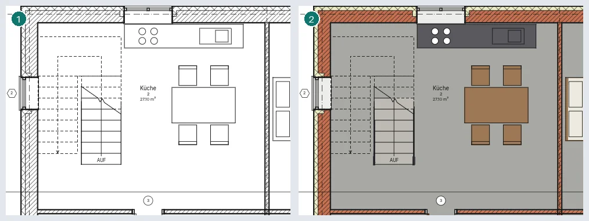
Das Farbschema der Räume ist in jedem Stil zu sehen. Mit Position des Farbschemas auf Hintergrund liegt es unter den Linien des Modells: im Grundriss über den Geschossdecken und unter den Möbeln, im Schnitt über den Oberflächen, die durch jeden geschnittenen Raum zu sehen sind. Auf Vordergrund deckt es das Modell ab, unter den Beschriftungen.
Stil Realistisch
Realistisch zeichnet die 3D-Ansicht wie ein Foto, in Echtzeit, und die Ansicht bleibt bearbeitbar wie in den anderen Stilen.
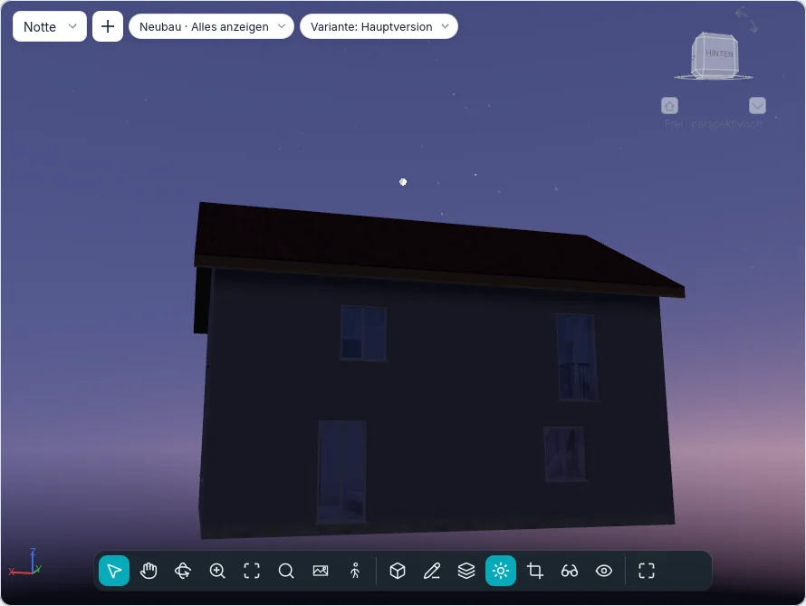
- Licht von Sonne und Himmel. Das Licht ist das der Projektsonne (Ort, Datum und Uhrzeit der Sonneneinstellungen) und des Himmels, den diese Sonne ergibt: blau am Tag, wärmer und dunkler bei Sonnenuntergang. Die Sonne beleuchtet das Modell auch bei ausgeschalteten Schatten; mit Schatten werfen sind ihre Schatten die der anderen Stile. Was im Schatten liegt, bleibt vom Himmel und vom Boden beleuchtet. Die Sonnenscheibe erscheint, sobald sie ins Bild kommt, mit einem Schein, und das Modell verdeckt sie. Gegen Sonnenuntergang wird das Sonnenlicht warm und schwächer, die Schatten werden länger; nach Sonnenuntergang bleibt nur der Himmel, der in eine blauviolette Dämmerung mit einem rosa Band am Horizont auf der Sonnenseite übergeht; nachts ist der Himmel dunkelblau und die Szene fast dunkel (selbstleuchtende Flächen bleiben sichtbar). Beim Ziehen der Sonne oder in einer Sonnenstudie ändert sich das Licht stufenlos.
- Mond und Sterne. Der Mond steht dort, wo er an Ort, Datum und Uhrzeit des Projekts steht, in seiner Phase: auf der der Sonne zugewandten Seite beleuchtet, der Rest schwach grau (Erdschein), nahe dem Horizont röter. Nachts ist er das Licht: Mit Schlagschatten wirft das Modell Mondschatten, der Vollmond beleuchtet die Szene sanft, der Neumond lässt sie fast dunkel. Nach Sonnenuntergang erscheinen die hellsten Sterne an ihrem Ort, umso mehr, je dunkler der Himmel ist.
- Materialien. Die Oberflächen haben das Aussehen ihres Materials (Registerkarte Darstellung von Materialien): das Texturbild in seiner wirklichen Größe, die Rauheit und ihre Map, das Relief, Metall, Glas und Wasser, die Selbstleuchtkraft (sichtbar, ohne andere zu beleuchten). Ein Material ohne eigenes Aussehen leitet es aus Farbe und Transparenz ab; ein Teil ohne Material nimmt die Farbe seiner Kategorie. Im Web kommen die Bilder später: bis dahin ist die Farbe zu sehen. Die Vorschau der Registerkarte Darstellung zeigt das Material auf einer Kugel, einem Würfel oder einer Wand von 2 × 2 m.
- Glas. Glas lässt sehen, was dahinter liegt, und spiegelt Himmel und Sonne, stärker bei streifendem Blick. Die Scheiben werden von der fernsten zur nächsten gezeichnet.
- Umgebungsschatten. Mit Umgebungsschatten anzeigen sind Ecken und Nischen, die weniger Himmelslicht erhalten, dunkler.
- Dunst. In der Ferne verschleiert die Luft das Modell: Dunst in der Ferne regelt, wie stark, und wie klar der Himmel ist.
- Belichtung. Automatisch folgt dem Licht der Szene und passt sich in etwa einer halben Sekunde an, wenn es sich ändert (Kamera vom Himmel in den Schatten, andere Uhrzeit). Manuell nutzt den Wert (EV): höher ist dunkler, etwa 15 unter der Mittagssonne.
In der Gruppe Realistisch der Grafischen Darstellungsoptionen: Belichtung und Wert (EV), Weißpunkt (das als Weiß gezeigte Licht: 6500 K ist Tageslicht, wie es ist, ein niedrigerer Wert kühlt das Bild, ein höherer wärmt es), Sättigung, Lichter und Tiefen (senken oder heben die hellsten und dunkelsten Töne) und Dunst in der Ferne. Kanten anzeigen zeichnet die Kanten über die Flächen. Das Beleuchtungs-Schema ist vorerst immer Außen: Sonne. Sonne, Umgebungslicht und Schattenintensität regeln das Licht der Sonne, das des Himmels und wie dunkel die Sonnenschatten sind.
Der Hintergrund Physikalischer Himmel (Zeit und Ort) zeigt hinter dem Modell denselben Himmel, der es beleuchtet, mit der Sonnenscheibe; mit Keiner, Himmel oder Verlauf bleibt der gewählte Hintergrund, und der Himmel beleuchtet das Modell trotzdem. Beim Wechsel zu Realistisch erhält eine Ansicht mit dem Hintergrund Keiner den Physikalischen Himmel (Zeit und Ort) und kehrt mit einem anderen Stil zu Keiner zurück. Ausgewählte Elemente und die Sonnenbahn sehen aus wie in den anderen Stilen.
Im Web ohne WebGPU (mit WebGL2) funktioniert Realistisch ohne Umgebungsschatten, und die automatische Belichtung richtet sich nach dem Himmel statt nach dem Bild. Im Web und auf Android kann die Ansicht, während sich die Kamera bewegt, kleiner gezeichnet werden, um flüssig zu bleiben, und wird wieder scharf, sobald sie anhält. Ohne Grafikkarte wird Realistisch als Schattiert gezeigt, und die Statusleiste sagt es. Grundrisse, Schnitte und Ansichten in Realistisch werden vorerst wie in Schattiert gezeichnet; Pläne, Ausdrucke und exportierte Bilder zeigen Realistisch noch nicht.
Stil Pastell
Der Stil Pastell zeichnet die Ansicht wie ein Aquarell oder eine Markerzeichnung: Jede Fläche ist eine gleichmäßige, sanft verlaufende Lasur in der Farbe ihres Materials, nie gestreift. Flächen in der Sonne bleiben nah am Papier; Flächen, die sich von der Sonne abwenden, erhalten dieselbe Farbe, tiefer und kühler, nie grau; wo ein Schlagschatten fällt, wird die Lasur noch tiefer, mit klarer Kante. Glas ist eine blaugraue Lasur mit einem warmen Glanz. Die Lasur verblasst zu den Rändern der Zeichnung hin, sodass um das Modell das Papier sichtbar bleibt; das Papier hat eine kaum sichtbare Körnung. Mit Pastell werden die skizzenhaften Linien in Tusche eingeschaltet; sie lassen sich wieder ausschalten und gehen mit einem anderen Stil aus.
Er gilt in jeder Ansicht. In 3D-Ansichten ist das Licht das von Realistisch: die Sonne des Projekts und ihre Schatten. In Grundrissen, Schnitten und Ansichten ist das Papier cremefarben, Flächen und Böden sind in den Farben ihrer Materialien lasiert und die geschnittenen Teile sind eine volle, dunkle Poché im Ton ihres Materials. Die Schlagschatten sind die der Ansicht: Sie werden mit denselben Einstellungen wie in den anderen Stilen ein- und ausgeschaltet, dunkler oder heller (Schattenintensität), in einem klaren, dunklen warmen Ton. Drucken und Export erscheinen lasiert wie auf dem Bildschirm, auch 3D-Ansichten.
Pastell ist gleich, welcher Hintergrund auch immer im Fenster ist: immer sein helles Papier, mit denselben Lasuren, derselben Poché und denselben Schatten.
Die Gruppe Pastell der Grafikanzeigeoptionen gilt pro Ansicht, und
Ansichtsvorlagen übernehmen sie: Lasurstärke (wie kräftig die Farbe aufgetragen ist),
Lasurverlauf (wie ungleichmäßig sie auf einer Fläche liegt), Papierkörnung und Sättigung
(wie viel von den Farben der Materialien die Lasur behält), von 0 bis 100, und die Papierfarbe
(mit Gewählt eine eigene Farbe; ohne das warmweiße Papier). Über die
Befehlszeile: graphicoptions {"style":"Pastello","pastel_density":70,"paper_color":"auto"}.
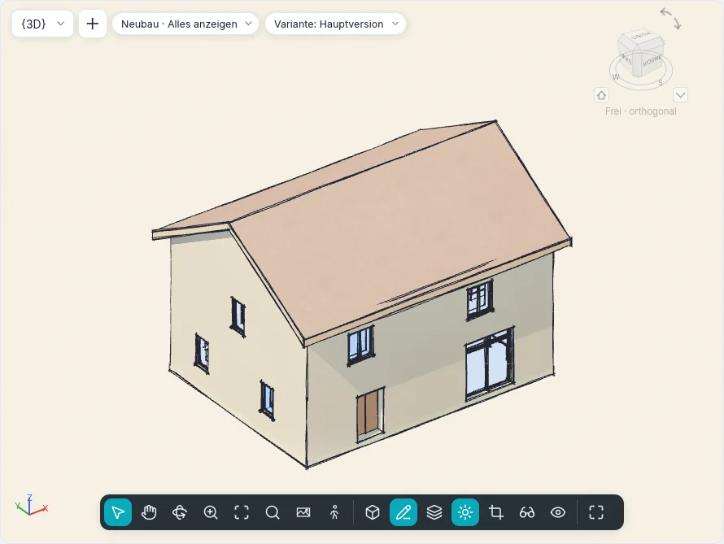
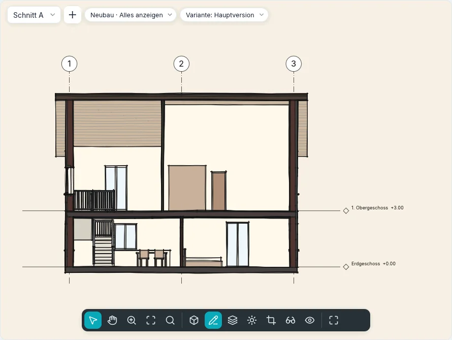
Live-Ansicht und Begehung
Live-Ansicht (Registerkarte Ansichten ▸ Präsentation, oder die Schaltfläche der schwebenden
Leiste der 3D-Ansicht) öffnet neben der 3D-Ansicht ein Fenster, das sie im Stil Realistisch
zeichnet, mit den Schatten der Sonne und dem physikalischen Himmel, und ihrer Kamera folgt: Wird
die 3D-Ansicht gedreht oder gezoomt, schaut die Live-Ansicht vom selben Punkt; jede Änderung am
Modell erscheint sofort. Während sich die Kamera bewegt, zeichnet die Live-Ansicht einen Entwurf
und verfeinert ihn danach. Unten in der Live-Ansicht stellt Uhrzeit die Stunde der eigenen
Sonne der Ansicht ein (Sonnenaufgang und -untergang sind auf dem Schieberegler markiert);
Projektsonne kehrt zur gemeinsamen Sonne des Projekts zurück. Die Eigenschaften der Ansicht
haben die Gruppe Live-Ansicht: Folgt der 3D-Ansicht und Entwurf bei Bewegung. In der
Befehlszeile: liveview 3d {"follows":true,"draft":true}.
Begehen (Registerkarte Ansicht ▸ Präsentation, die schwebende Leiste der 3D-Ansicht, die Navigationsleiste des klassischen Stils oder die Befehlssuche) ist ein Befehl wie die anderen: die kontextabhängige Registerkarte Ändern | Begehen öffnet sich, die Optionsleiste zeigt ihre Möglichkeiten und die Statusleiste sagt, was zu tun ist. Die aktive 3D-Ansicht wird zu den Augen von jemandem, der durch das Modell geht: man steht auf dem Boden unter der Mitte der Ansicht, mit Blick dorthin, wohin die Ansicht schaute. Der Mauszeiger wird beim ersten Klick in die Ansicht eingefangen (bis dahin bleiben Registerkarte und Optionsleiste erreichbar):
| Taste | |
|---|---|
| W A S D oder die Pfeile | gehen |
| die Maus | umschauen |
| Umschalt | laufen |
| Komma und Punkt, oder das Mausrad | langsamer und schneller |
| F | Gehen oder Fliegen |
| E und Q, Bild auf und Bild ab | steigen und sinken (im Flug) |
| K | ein Schlüsselbild |
| R | Aufnahme starten und beenden |
| Esc | die Begehung beenden |
Die anderen Tastenkürzel warten, bis man die Begehung verlässt. Beim Gehen hält die Schwerkraft auf Böden, Podesten und Decken; eine Stufe, die etwas höher ist als die höchste Steigung des Projekts, wird unbemerkt genommen, so werden Treppen und Rampen gehend bestiegen; Wände, Stützen, Geländer, Möbel und Fensterglas halten auf, und man gleitet an ihnen entlang; Türen werden durchschritten. Fliegen hebt Schwerkraft und Kollisionen auf. Man verlässt die Begehung mit Esc, Ändern, Beenden in der Registerkarte oder mit einem anderen Befehl; die Ansicht bleibt dort, wo man angekommen ist. Ein Grundriss der Ebene, auf der man steht, zeigt, wo man ist und was man sieht.
Die Registerkarte Ändern | Begehen hat Modus (Gehen, Fliegen), Rundgang (Schlüsselbild, Aufnehmen) und Begehen (Optionen…, Beenden); im BIMopen-Stil stehen sie in der Registerkarte der Werkzeugleiste. Die Optionsleiste hat Gehen oder Fliegen, die Augenhöhe, die Geschwindigkeit, Rundgang (wohin Schlüsselbilder und Aufnahme gehen: Neu oder einer der Rundgänge des Projekts), Parallel zum Boden bewegen, Drehempfindlichkeit und Trägheit (der Blick beginnt und endet weich; 0 % wie bisher). Während der Begehung zeigt die Eigenschaftenpalette die Gehgeschwindigkeit, das Laufen, die Fluggeschwindigkeit, die Augenhöhe, Schwerkraft und Kollisionen, die überwindbare Stufe, die Empfindlichkeit und die Trägheit, Vertikale Achse umkehren, Aufnehmen in, Schlüsselbild alle und die Glättung des aufgenommenen Rundgangs. Auf einem Touchscreen lässt ein Joystick gehen, ein Ziehen auf der Ansicht schauen, und Schaltflächen lassen laufen, fliegen, steigen und sinken, Schlüsselbilder setzen, aufnehmen und beenden.
Optionen… öffnet die Einstellungen Begehung. Bewegung enthält die persönlichen
Einstellungen, in jedem Projekt gleich: Augenhöhe (1,60 m), Gehgeschwindigkeit, Laufen,
Fluggeschwindigkeit, Drehempfindlichkeit, Drehträgheit, Schlüsselbild alle,
Vertikale Achse umkehren, Sichtfeld und Flug parallel zum Boden. Kollisionen nach
Kategorie enthält die des Projekts: für jede Kategoriegruppe, ob Kollision deaktivieren an
ist (bei Türen und Türpaneelen von Fassaden ist es so), und die Überwindbare Stufe, aus den
Treppen genommen, wenn man sie nicht eingibt. Über die Befehlszeile: walksettings {"step":0.22},
collision {"group":"furniture","off":true}.
Kollision deaktivieren
Jedes Element mit einem Körper hat Kollision deaktivieren in der Gruppe Begehung seiner
Eigenschaften: eingeschaltet, geht man durch es hindurch. Der Wert kommt vom Typ und der des Typs
von seiner Kategorie; Kollision vom Typ (bei einem Typ Kollision von der Kategorie) zeigt
es an, und das Setzen von Kollision deaktivieren macht den Wert zu dem des Elements. Mehrere
ausgewählte Elemente zeigen ‹unterschiedlich›, wo sie sich unterscheiden. Bauteillisten
führen es als Feld und Filter verwenden es als Regel. Außerhalb der Begehung ändert es nichts.
Ein Boden, eine Treppe oder eine Rampe mit deaktivierter Kollision trägt auch niemanden. In der
Befehlszeile: collision 42 {"off":true}, oder {"off":null}, um den Wert des Typs wieder zu
übernehmen.
Rundgang
Rundgang (Registerkarte Ansicht ▸ 3D-Ansicht ▾ oder die Befehlssuche) wird in einem Grundriss, einem Schnitt oder einer Ansicht wie eine Wand gezeichnet: die Optionsleiste hat Perspektive, die Ebene und den Versatz (1,60 m, die Augen der Begehung); jeder Klick setzt ein Schlüsselbild, und der nächste Abschnitt folgt dem Cursor, mit dem Dreieck der Kamera am Anfang. In einem Schnitt oder einer Ansicht geben die Klicks auch die Höhe. Ein Doppelklick, Esc oder Rundgang beenden in der Registerkarte schließen den Weg ab (Rundgang abbrechen verwirft ihn): es entsteht Rundgang 1 im Zweig Rundgänge des Projektbrowsers und öffnet sich daneben, bei Bild 1. Es ist eine Kameraansicht, die sich bewegt: sie hat ihren Zuschneidebereich, ihre hintere Schnittebene und die Eigenschaften der Kamera, dazu Rundgangbilder und Bild.
Im Grundriss ausgewählt (ein Klick auf den Weg oder Kamera anzeigen im Projektbrowser), wird der Rundgang in der Registerkarte Rundgang ändern bearbeitet. Steuerung in der Optionsleiste wählt, was die Griffe tun:
- Aktive Kamera: die Kamera wird entlang des Wegs gezogen und rastet an den Schlüsselbildern ein; auf einem Schlüsselbild zeigt der rote Punkt, wohin sie schaut, und lässt sich ziehen, und die Ecken des Dreiecks ändern das Sichtfeld;
- Pfad: die Schlüsselbilder werden zu Griffen; in einem Schnitt oder einer Ansicht ändert sich ihre Höhe;
- Schlüsselbild hinzufügen: ein Klick auf den Weg setzt eines;
- Schlüsselbild löschen: ein Klick auf eines entfernt es (mindestens zwei bleiben).
Bild zeigt das Bild der Ansicht und lässt sich eingeben; daneben die Schaltflächen voriges Schlüsselbild, voriges Bild, nächstes Bild, nächstes Schlüsselbild und Wiedergabe, die den Rundgang in seiner Ansicht vom gezeigten bis zum letzten Bild abspielt; die Statusleiste sagt „Bild 87 von 300“, mit Abbrechen; Esc hält an. Kameras zurücksetzen lässt jedes Schlüsselbild wieder entlang des Wegs schauen.
Bilder… öffnet Rundgangbilder: Bilder gesamt (300), Bilder pro Sekunde (15), Gesamtzeit (20 s), Gleichmäßige Geschwindigkeit (an: die Kamera fährt immer gleich schnell; aus, hat jedes Schlüsselbild seine Beschleunigung, von 0,1 bis 10, für den Abschnitt, der dort beginnt), und für jedes Schlüsselbild das Bild, die Geschwindigkeit und die verstrichene Zeit. Drehglättung sagt, wie sich der Blick bei Richtungswechseln dreht: 0 % sofort am Schlüsselbild, 100 % über den halben Abschnitt davor und danach, weich beginnend und endend; der Weg hat eine, und jedes Schlüsselbild kann eine eigene haben. Die Grafik darunter zeigt die Drehung des Blicks über die Zeit. Markierungen mit Bildschritt zeigt die Bilder entlang des Wegs im Grundriss.
Exportieren… (auch unter Datei ▸ Exportieren ▸ Bilder und Animationen ▸ Rundgang…) öffnet Länge/Format: Alle Bilder oder ein Bildbereich von–bis, Bilder pro Sekunde (die Gesamtzeit folgt), der Grafikstil (der der Ansicht oder ein anderer), Größe und Zoom, dann der Dateityp: ein AVI-Film (Motion-JPEG), auf Wunsch mit den Bildern, oder eine Folge von JPEG-, PNG-, TIFF- oder BMP-Bildern. Ein Balken zeigt den Fortschritt, mit Abbrechen.
Bei der Begehung fügt Schlüsselbild (K) ein Schlüsselbild dort hinzu, wo man steht, mit dem
aktuellen Blick, im in der Optionsleiste gewählten Rundgang; mit Neu erstellt das zweite
Rundgang N. Aufnehmen (R) erstellt einen Rundgang aus der Begehung: ein Schlüsselbild pro
Sekunde (Schlüsselbild alle), so lang wie die Begehung und so weich wie die Trägheit. Die
Wege früher gespeicherter Projekte werden beim Öffnen zu Rundgang-Ansichten. Über die
Befehlszeile: walkthrough {"points":[[0,-6],[5,-6],[5,2]],"offset":1.6},
walkthrough 42 {"frame":"next_key"}, walkthrough 42 {"frames":150,"uniform":false,"key":{"index":0,"accel":2}};
walk {"from":[4,2.5],"to":[8,2.5]} zeigt, wo eine Begehung endet.
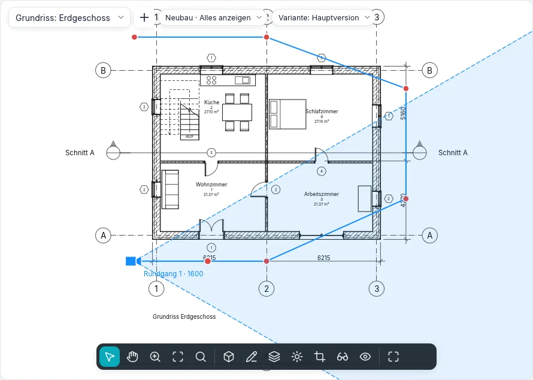
Sonne und Schatten
Grundrisse, Schnitte, Ansichten und 3D-Ansichten zeigen die Sonne (Zeichenansichten, Legenden, Pläne und Bauteillisten nicht). Die Ansichtssteuerungsleiste hat zwei Schaltflächen, jede mit einem kleinen Pfeil für ihr Menü (die rechte Maustaste öffnet es auch):
- Sonnenbahn: ihr Menü hat Sonnenbahn anzeigen / Sonnenbahn ausblenden, Sonneneinstellungen… und An Modell anpassen (zeigt die ganze Sonnenbahn);
- Schatten: ihr Menü hat Schatten einschalten / Schatten ausschalten, Grafische Darstellungsoptionen… und Vorschau der Sonnenstudie.
Solange eine der beiden an ist, zeigt die Leiste auch Uhrzeit und Datum der Sonne, jedes mit − und + (eine Viertelstunde, ein Tag). Dieselben Schaltflächen und Menüs stehen im Menü Sonne und Schatten der Ansichtsleiste im BIMopen-Stil, im Ansichtsblatt des Touch-Modus und im Kontextmenü der Ansicht. Sonnenbahn ist auch ein Kontrollkästchen in den Eigenschaften der Ansicht (Grafik), mit Größe der Sonnenbahn (100–500 %, sonst 150 %) und Gemeinsame Sonne.
Die Schatten werden aus dem Modell und der Sonne berechnet, in jeder Ansicht gleich: im Grundriss fallen sie auf das, was der Grundriss zeigt, und wo nichts steht, auf die Ebene einer Ebene (Schatten auf der Ebene in den Sonneneinstellungen, sonst auf das Gelände, die unterste Ebene); in Schnitten und Ansichten fallen sie auf die Fassaden und auf das, was dahinter liegt, von Traufen, Balkonen, Rücksprüngen und anderen Gebäuden, und ebenso in 3D-Ansichten. In Linien (verdeckte Linien) ist ein Schatten ein Grau des Papiers, in den schattierten Stilen dunkelt er die Farben der Materialien ab. Von der Ansicht geschnittene Flächen bleiben im Licht.
Die Sonnenbahn ist ein Ring um das Modell mit den Himmelsrichtungen nach geografischem Norden, dem Bogen des Tages mit seinen Stunden, dem Analemma (wo die Sonne zu dieser Uhrzeit im Lauf des Jahres steht: eine durchgehende Acht, jeden Tag zur Uhrzeit des gewählten Datums), dem Teil, den eine Studie durchläuft, und der Sonne mit Uhrzeit und Datum; in einer 3D-Ansicht ist sie eine Kuppel über dem Ring. In Grundrissen, Schnitten, Ansichten und 3D-Ansichten lässt sich die Sonne ziehen: entlang des Tages rastet sie auf Viertelstunden ein, entlang des Jahres folgt sie dem Analemma Tag für Tag (bei der Zeitumstellung verschiebt sich die Uhr um die Umstellung, so springt die Sonne nicht); Shift beim Ziehen nimmt das andere, und Entlang des Tages / Entlang des Jahres im Menü der Sonnenbahn wählen, was zuerst kommt. Die Schatten folgen dem Ziehen: In Grundrissen, Schnitten und Ansichten sind sie, während sich die Sonne bewegt, ein gröberer Entwurf, jede Ansicht zeigt ihre letzten Schatten, bis die neuen fertig sind, und beim Loslassen der Sonne werden sie vollständig gezeichnet. Mit der Ansicht unter dem Cursor (und nichts ausgewählt, oder nach einem Klick auf die Sonne) verschieben Left und Right die Uhrzeit, Up und Down das Datum. Mit Beleuchtung steht die Sonne still und hat keine Bahn.
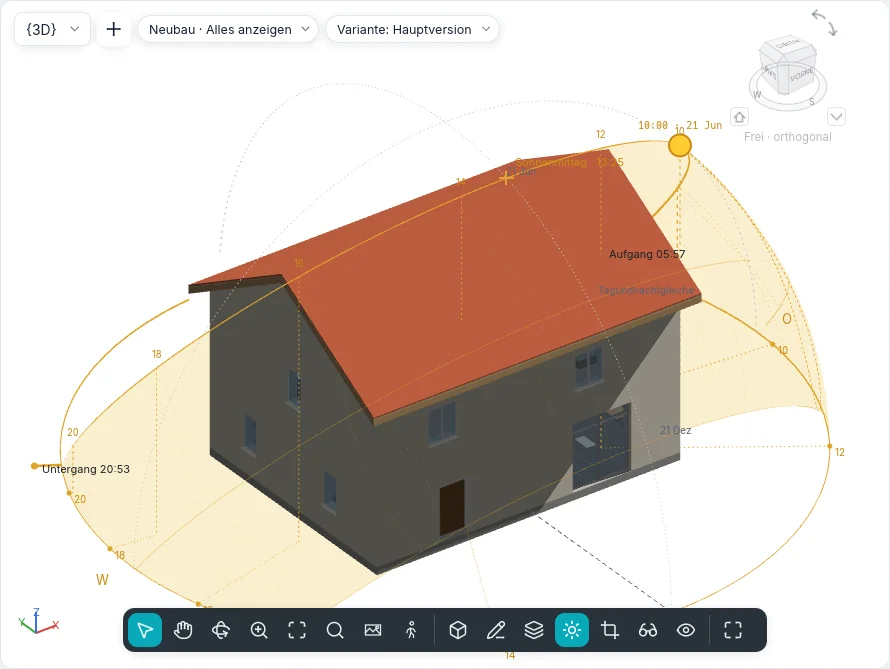
Das Menü der Sonnenbahn (in der Ansichtsleiste, im Menü der Ansicht und im Touch-Modus) hat auch Visuelle Hilfen zum Lesen: Senkrechte Stundenlinien (von jeder geraden Stunde eine gestrichelte Linie zum Boden und zum Ring, mit der Stunde dort; im Grundriss ein Punkt auf dem Ring), Bogen auf den Boden projiziert, Sonnenmittag (der höchste Punkt des Bogens mit seiner Uhrzeit, und die Nord-Süd-Linie), Jahresband (der Himmel, den die Sonne im Jahr durchquert, in hellem Gelb, die Bögen der Sonnenwenden und der Tagundnachtgleiche, die Analemmas der geraden Stunden), Sonnenaufgang und -untergang (Marken auf dem Ring mit ihren Uhrzeiten; die Ansichtsleiste zeigt sie mit der Tageslänge) und Analemma; alle außer der Projektion sind anfangs aktiv. In einer 3D-Ansicht verdeckt das Modell, was dahinter liegt. Die Sonneneinstellungen zeigen die Auf- und Untergänge des Jahres auch als Diagramm: ein Klick oder Ziehen darauf wählt den Tag.
Gemeinsame Sonne: die Ansichten teilen die Sonne des Projekts, außer sie haben eine eigene (die Eigenschaft Gemeinsame Sonne). Die gemeinsame Sonne in einer Ansicht zu bewegen, bewegt sie in jeder Ansicht, die sie teilt; eine Ansicht mit eigener Sonne bleibt, wie sie ist. Eine Sonne für alle Ansichten in den Sonneneinstellungen bringt alle Ansichten wieder auf sie.
Jede Änderung ist ein Schritt von Rückgängig; der Befehl sun tut dasselbe in der
Befehlszeile und über MCP (siehe Befehlszeile und MCP).
Sonneneinstellungen
Sonneneinstellungen… öffnet ein Dialogfeld mit Azimut, Höhenwinkel, Uhrzeit und Datum der Sonne in der Kopfzeile:
- links die Vorgaben: eine nicht gespeicherte Zeile je Modus, die mitgelieferten (Sommersonnenwende, Wintersonnenwende, Frühlings-Tagundnachtgleiche, Herbst-Tagundnachtgleiche, Sommer, 9 bis 17 Uhr, Licht von oben rechts) und die des Projekts; Speichern…, Duplizieren…, Umbenennen… und Löschen (nur die Vorgaben des Projekts lassen sich umbenennen oder löschen);
- in der Mitte der Modus und seine Felder:
| Modus | Was er braucht |
|---|---|
| Zeitpunkt | das Datum und die Uhrzeit; Eine Sonne für alle Ansichten |
| Ein Tag | das Datum, Sonnenaufgang bis Sonnenuntergang oder eine Startzeit und eine Endzeit, die Zeit zwischen den Bildern (15, 30 oder 45 Minuten, 1 Stunde); daraus folgt die Zahl der Bilder |
| Mehrere Tage | Ab Tag und Bis Tag (Tag/Monat), die Uhrzeit, das Intervall (1 Stunde, 1 Tag, 1 Woche, 1 Monat) |
| Beleuchtung | Azimut (°) und Höhenwinkel (°); Relativ zur Ansicht: das Licht folgt der Richtung der Ansicht |
Dann der Standort des Projekts (eine Stadt, oder Benutzerdefiniert mit Breite und Länge: einer für das ganze Projekt; ein benutzerdefinierter Ort übernimmt die Zeitzone der nächsten Stadt; ein neues Projekt beginnt in Rom, das Beispielhaus steht in Cagliari) mit Sommerzeit, die automatisch ist: die Regel des Ortes (Europa, Nordamerika, Chile, Südostaustralien, Neuseeland, Ägypten oder keine) und der genaue Sonntag im Jahr der Sonne, sodass die Uhrzeiten auf der Sonnenbahn und in den Studien die der Uhr sind; die Regel lässt sich ändern. Dann Schatten auf der Ebene mit ihrer Geländeebene; - rechts die Vorschau: der Himmel von oben, mit der Bahn des Tages, dem Analemma und der Sonne. Vorschau in der Kopfzeile, rechts der Werte, ist ein Schalter, der sie aus- und einblendet; das Dialogfeld behält seine Größe, und ohne Vorschau nehmen die Einstellungen ihren Platz ein.
Anwenden ändert die Sonne der Ansicht und lässt das Dialogfeld offen, OK ändert sie und schließt es, Abbrechen ändert nichts. Projekte von vor dem Standort des Projekts behalten Ort und Datum jeder Ansicht: die erste Ansicht, deren Sonne geändert war, gibt dem Projekt seinen Standort, und die Ansichten, deren Sonne geändert war, behalten ihre als eigene.
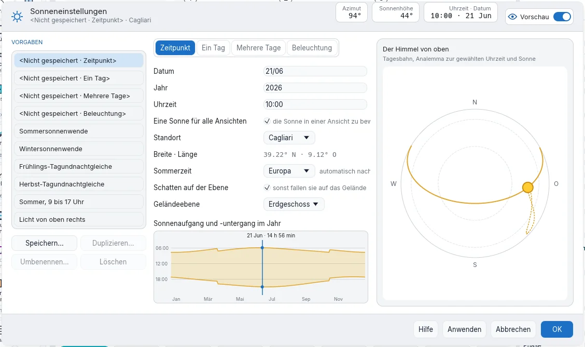
Sonnenstudie
Vorschau der Sonnenstudie (im Menü Schatten) zeigt über der Ansicht die Leiste der Studie: ⏮ −10, ⏴, ⏵ Abspielen / ⏸ Pause, ⏵, +10 ⏭ und Bild n von N. Eine Sonne eines Zeitpunkts wird über ihren Tag studiert. Als Bild speichern speichert das gezeigte Bild als PNG mit dem Namen der Ansicht, dem Datum und der Uhrzeit; Studie exportieren… speichert alle Bilder als PNG- oder JPEG-Bildfolge (ein Film bräuchte einen Video-Encoder, den BIMopen nicht hat: die Wahl ist ausgegraut, mit dem Grund). × schließt die Leiste; eine andere Ansicht schließt sie auch.
Grafische Darstellungsoptionen
Grafische Darstellungsoptionen… stellt die grafischen Optionen der aktiven Ansicht ein, in Gruppen, die sich mit einem Klick auf ihren Titel öffnen und schließen (das Fenster merkt sich, welche offen sind, und behält Größe und Position):
- Modelldarstellung: der Grafikstil; Kanten anzeigen (die Kanten über den Flächen in den Stilen Schattiert, Einheitliche Farben und Realistisch; angehakt und grau in den Stilen, die sie immer zeichnen); Glatte Linien mit Kantenglättung (Linien und Kanten der 3D-Ansicht geglättet; ohne, schärfer und schneller gezeichnet; Grundrisse, Schnitte und Ansichten haben immer glatte Linien); Transparenz (0–100: alle Flächen der Ansicht werden durchsichtig und das Dahinterliegende wird sichtbar, im Stil Verdeckte Linien auch die verdeckten Kanten; gilt für 3D-Ansichten in den Stilen mit Flächen, für Realistisch in einer nächsten Phase); die Silhouettenkanten (Keiner, Mittel, Dick: eine dickere Linie am Außenumriss des Modells).
- Schatten: Schlagschatten und Umgebungsschatten anzeigen (Ecken und Vertiefungen abgedunkelt).
- Skizzenhafte Linien: siehe Skizzenhafte Linien.
- Tiefenwirkung (Schnitte und Ansichten): mit Tiefe anzeigen verblasst, was weiter von der Ansichtslinie entfernt ist, zum Hintergrund. Beginn des Verblassens und Ende des Verblassens (in Prozent der Ansichtstiefe) legen fest, wo es beginnt und endet; Grenze des Verblassens, wie viel vom Entferntesten sichtbar bleibt (0: es verschwindet, 100: kein Verblassen). Linien, Flächen, Muster und skizzenhafte Linien verblassen, auf dem Bildschirm wie im Druck und Export, auf hellem und dunklem Hintergrund; Beschriftungen und geschnittene Teile bleiben, wie sie sind.
- Beleuchtung: das Schema (vorerst immer Außen: Sonne), die Sonneneinstellungen (die Schaltfläche öffnet sie), Künstliche Lichter… (grau: sie kommen in einer nächsten Phase), Sonne, Umgebungslicht und Schattenintensität (0–100).
- Realistisch: die Einstellungen des Stils Realistisch (siehe Stil Realistisch).
- Pastell: die Einstellungen des Stils Pastell (siehe Stil Pastell).
- Hintergrund (3D-Ansichten): Keiner, Himmel, Verlauf, Physikalischer Himmel (Zeit und Ort); mit Verlauf Himmelsfarbe, Horizontfarbe und Bodenfarbe, von oben nach unten. Bild ist grau: es kommt in einer nächsten Phase.
Unten wendet Als Ansichtsvorlage speichern… die Optionen auf die Ansicht an und fragt nach dem
Namen einer neuen Ansichtsvorlage, die sie übernimmt. Jede Zahleneinstellung hat ihren
Schieberegler und ein Feld für den Wert. Die Vorschau zeichnet die Ansicht mit den gewählten
Optionen; der Schalter Vorschau in der Kopfzeile blendet sie aus und ein, wie in den
Sonneneinstellungen. Im Stil Realistisch sieht die Vorschau aus wie die Ansicht. Ansichtsvorlagen übernehmen diese Optionen mit dem Grafikstil, und Sonne und Schatten als
Sonne und Schatten. In der Befehlszeile: graphicoptions {"edges":true,"transparency":30,"depth":true,"depth_limit":20,"background":"sfumatura","sky_color":"189-209-208"}.
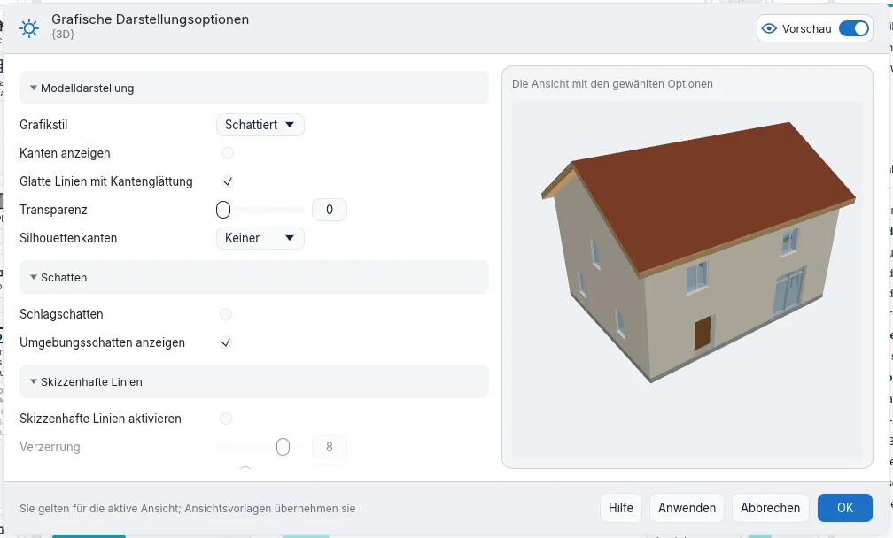
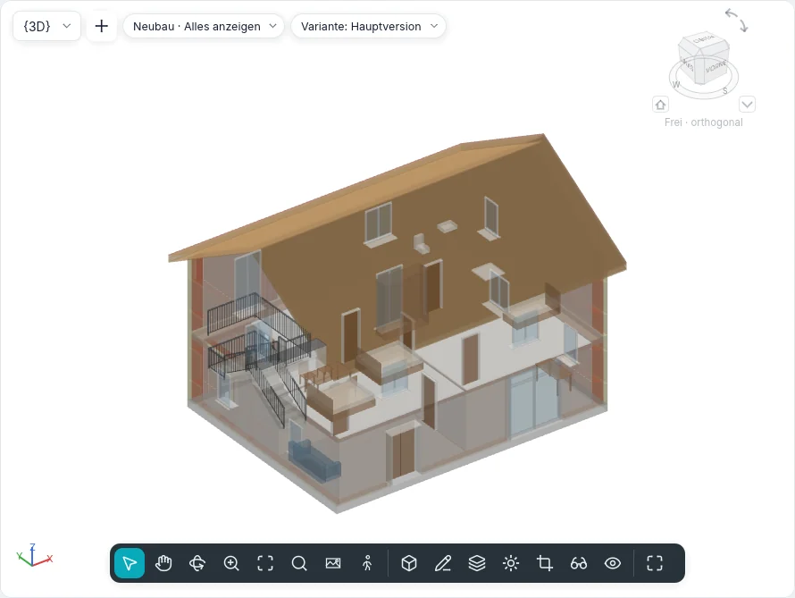
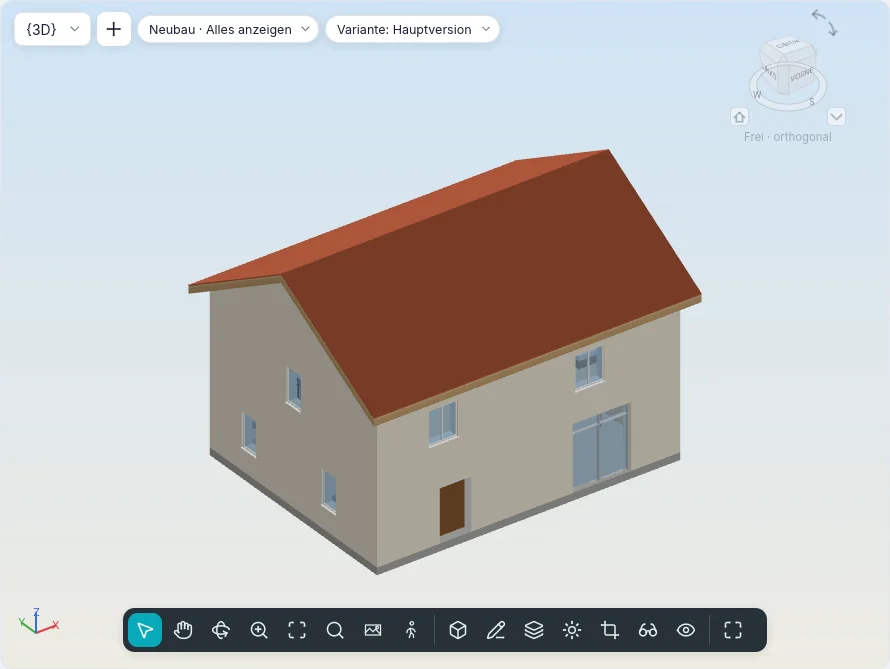
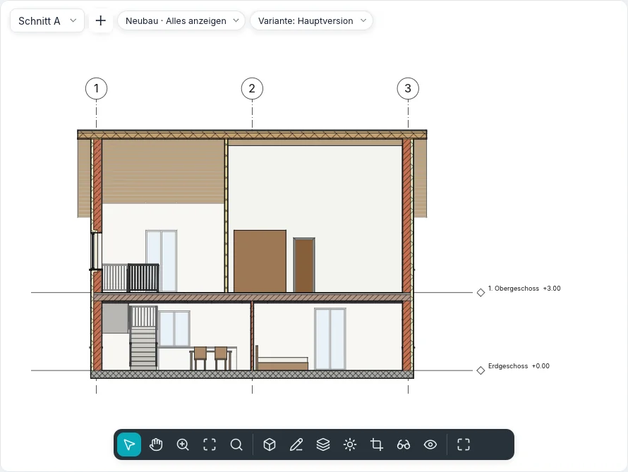
Skizzenhafte Linien
Die Gruppe Skizzenhafte Linien der Grafischen Darstellungsoptionen… zeichnet die Linien der Ansicht wie von Hand. Skizzenhafte Linien aktivieren schaltet sie für die aktive Ansicht ein; Verzerrung (0–10) legt fest, wie stark jede Linie zittert und wie oft sie nachgezogen wird (0 gerade, zweimal ab 4, dreimal ab 8); lange Linien zittern mehr als kurze. Verlängerung (0–10) legt fest, wie weit die Linien über ihre Enden hinauslaufen, über die Ecken, an denen sie sich treffen (0 lässt sie dort enden). Sie beginnen bei 5 und 1 in Grundrissen, Schnitten, Ansichten und 2D-Ansichten, bei 8 und 3 in 3D-Ansichten. Die Schaltfläche ✎ der Ansichtsleiste (in jedem Oberflächenstil; im Touch-Modus im Ansichtsbereich) schaltet sie für die aktive Ansicht ein und aus: Skizzenhafte Linien aktivieren / Skizzenhafte Linien deaktivieren.
Sie gelten in jeder Ansicht (Grundrisse, Schnitte, Ansichten, Zeichenansichten, 3D-Ansichten,
Ansichten auf Plänen) und in jedem Grafikstil: für die Linien des Modells, der Detailbauteile und
der Füllmuster. Beschriftungen bleiben gerade: Bemaßungen, Texte, Ebenen, Raster,
Referenzebenen, Beschriftungsmarken, Symbole und Ansichtsmarken. Eine Ansicht zeichnet bei jedem
Neuzeichnen und nach einem Orbit zurück dieselben Linien und wird genau so gedruckt und exportiert,
wie das Fenster sie zeigt: PDF und SVG behalten die Linien als Vektoren, ein gedruckter Schnitt oder
eine gedruckte Ansicht lässt nur die Teile weg, die nähere Flächen verdecken. Auswahl und Fang
verwenden weiterhin die geraden Linien. Ansichtsvorlagen übernehmen die Einstellung mit den
anderen grafischen Darstellungsoptionen. In der Befehlszeile:
graphicoptions {"sketchy":true,"distortion":5,"extension":1}.
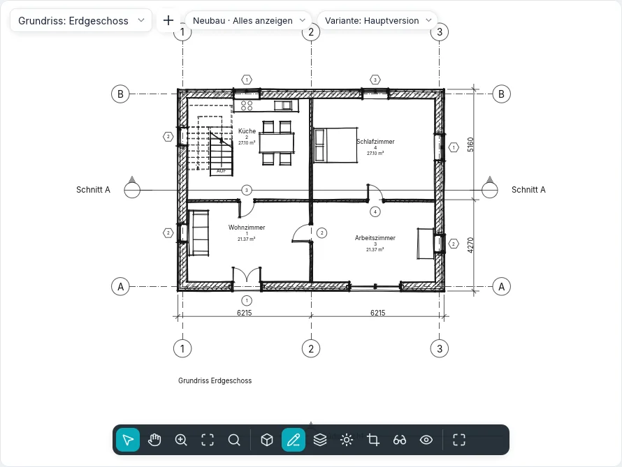
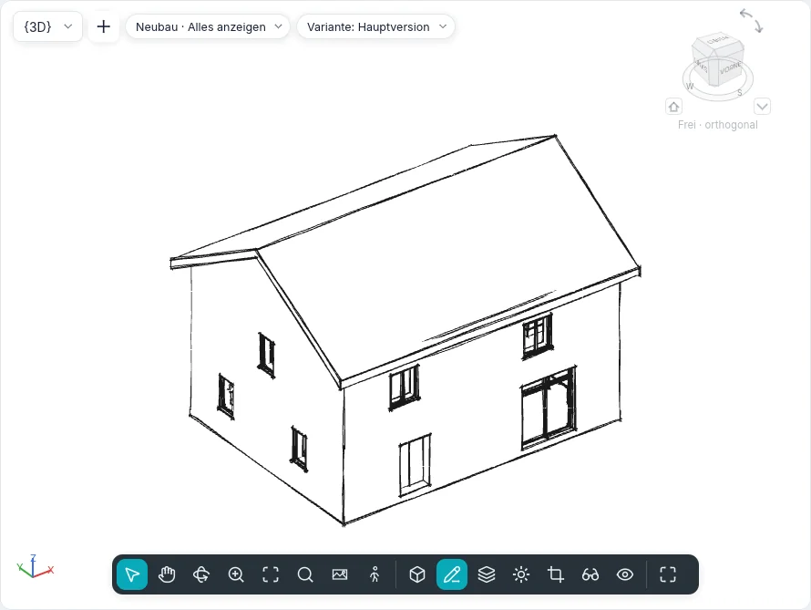
Grundrisse und ihre Schnitthöhen
Ansichten ▸ Erzeugen ▸ Grundriss ▸ Grundriss öffnet Neuer Grundriss: Wählen Sie die Ebenen und den Maßstab, dann OK. Ist Vorhandene Ansichten nicht duplizieren eingeschaltet, werden die Ebenen übergangen, die bereits einen Grundriss haben; schalten Sie es aus, um einen zweiten Grundriss einer Ebene zu erstellen.
Ein Grundriss ist ein horizontaler Schnitt durch das Modell auf der Schnittebene seiner Schnitthöhen. Wände, die die Schnittebene kreuzen, werden geschnitten gezeichnet, mit den Schnittmustern der Materialien ihrer Schichten mit Detail auf Mittel und Fein; tiefer liegende Wände und die Geschossdecken der Ebene sind von oben zu sehen.
Um die Schnitthöhen zu ändern, wählen Sie nichts aus (damit Eigenschaften die Ansicht zeigt) und dann Schnitthöhen ▸ Bearbeiten…. Jede Ebene wird von einer Ebene aus gemessen, mit einem Versatz:
| Ebene | Bezugsebene |
|---|---|
| Oben | Die eigene Ebene des Grundrisses (Zugehörige Ebene), die Ebene darüber, eine Ebene nach Namen oder Unbegrenzt |
| Schnittebene | Immer die eigene Ebene des Grundrisses |
| Unten | Die eigene Ebene des Grundrisses, die Ebene darunter oder eine Ebene nach Namen |
| Ansichtstiefe | Wie Unten, oder Unbegrenzt |
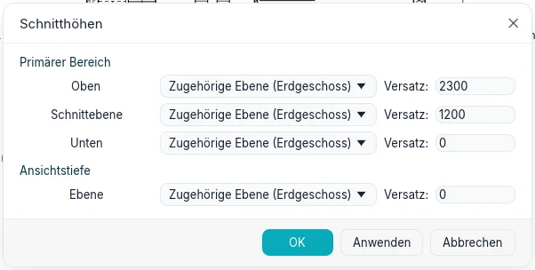
OK setzt die vier Ebenen gemeinsam, als eine einzige Änderung. Sie müssen in der Reihenfolge von oben nach unten bleiben (oben, Schnittebene, unten, Ansichtstiefe): Andernfalls erklärt das Fenster, was nicht stimmt, und bleibt geöffnet. Geschossdecken unterhalb von Unten, bis zur Ansichtstiefe, werden dahinter in dünnen Linien gezeichnet; ebenso Geschossdecken, die ein wenig unter Unten liegen, etwa eine abgesenkte Decke, auch wenn die Ansichtstiefe auf Unten liegt.
Unterlage
Ein Grundriss kann einen anderen Bereich des Modells heller unter sich zeigen: das Geschoss darunter zum Nachzeichnen oder das darüber zum Ausrichten. In Eigenschaften (nichts gewählt), Gruppe Unterlage:
- Bereich: Basisebene schaltet sie ein: eine Ebene wählen (Keiner schaltet sie aus). Bereich: Oberste Ebene wird mit der Ebene über der Basis gefüllt; eine andere Ebene darüber oder Unbegrenzt wählen, um mehr vom Modell zu zeigen.
- Ausrichtung der Unterlage: Nach unten zeigt sie von oben, wie einen Grundriss; Nach oben von unten, wie einen Deckenplan.
Von der Unterlage werden nur die Linien gezeichnet, unter dem Grundriss, und was die Ansicht ausblendet, bleibt ausgeblendet. Solange Elemente der Unterlage wählen (in der Statusleiste) eingeschaltet ist, wählt ein Klick oder ein Fenster auch sie, und sie lassen sich von hier bearbeiten; ausgeschaltet geht der Klick durch sie hindurch. Projekt ▸ Weitere Einstellungen ▸ Halbton/Unterlage legt für das ganze Projekt Dicke und Muster der Unterlage, Halbton anwenden und die Helligkeit jedes Halbtons fest (auch von Modell anzeigen ▸ Halbton).
Weitere Eigenschaften der Ansichten:
- Ausrichtung: Geografischer Norden dreht einen Grundriss auf dem Bildschirm, sodass der geografische Norden des Projekts oben ist; Zeichnen und Bearbeiten funktionieren wie gewohnt.
- Ansichtsmaßstab ▸ Benutzerdefiniert lässt den Maßstabswert 1: eingeben.
- Tiefenzuschnitt (Grundrisse) und Hinterer Zuschnitt (Schnitte und Ansichten): Kein Zuschnitt, Ohne Linie zuschneiden, Mit Linie zuschneiden; Versatz hinterer Zuschnitt gibt die Tiefe eines Schnitts ein.
- Ansichtsvorlage: eine der Ansicht zugewiesene Vorlage; solange sie es ist, folgen die enthaltenen Eigenschaften der Vorlage und werden dort eingestellt.
- Anzeigen in (Schnitte): Schneidende Ansichten zeigt den Schnitt in jedem Grundriss, Nur Primäransicht nur in den Grundrissen der Ebene, auf der er gezeichnet wurde.
- Zugehörige Ebene und Abhängigkeit sind schreibgeschützt.
Heller und dunkler Hintergrund
Optionen ▸ Design ▸ Dunkel (oder Hintergrundfarbe umkehren) macht den Zeichenbereich dunkel. Der Hintergrund ändert nur eines: Schwarze Linien (Kanten, Texte, Muster) werden hell gezeichnet, damit sie lesbar bleiben (Text auf den Farben der Räume bleibt dunkel, wie auf hellem Hintergrund); allein in den Linienstilen (Drahtmodell und Linien) werden Papier und schwarze Linien zusammen umgekehrt, in Grundrissen, Schnitten, Ansichten und in 3D. In den Stilen, die die Farben des Modells zeigen (Schattiert, Volle Farben, Realistisch, Pastell), sind Flächen, Materialien, Füllungen, Lasuren, Schatten, Poché, Transparenz und Tiefendarstellung auf jedem Hintergrund gleich, und Pastell zeichnet immer auf seinem hellen Papier. Optionen ▸ Größe der Benutzeroberfläche vergrößert die gesamte Benutzeroberfläche von 100 % bis 250 %, zusätzlich zur Skalierung des Bildschirms selbst: nützlich bei Bildschirmen mit vielen Pixeln. Die Einstellung bleibt für den nächsten Start erhalten.
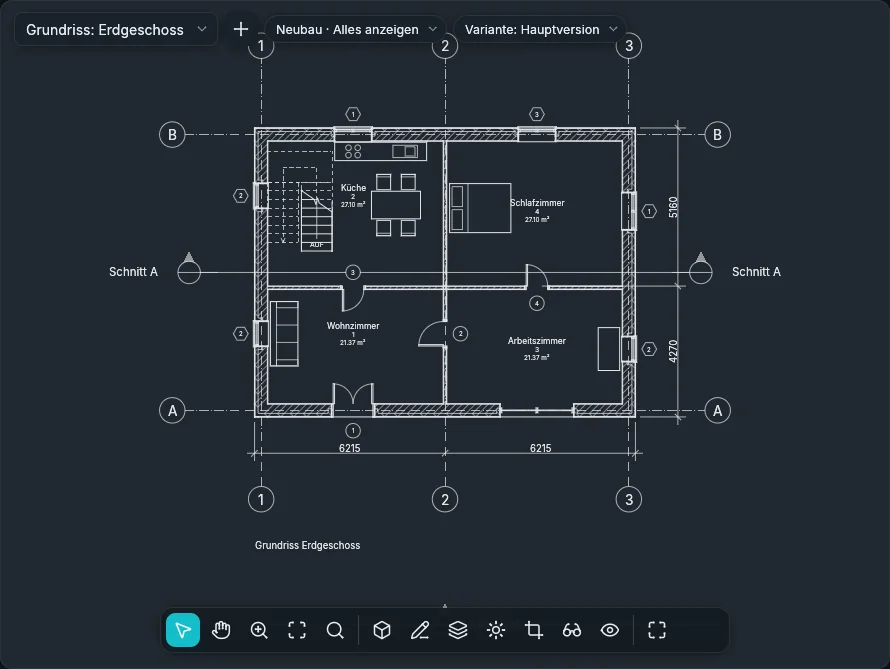
Eine Ansicht über ihr Symbol öffnen
Doppelklicken Sie auf das Symbol einer Ansicht, um sie zu öffnen: eine Schnittlinie oder ihren Kopf, ein Gebäudeansichtssymbol, die Begrenzung eines Ausschnitts (ein Verweisausschnitt öffnet die Ansicht, auf die er verweist), die Linie einer Ebene in einem Schnitt oder einer Gebäudeansicht (ihr Grundriss wird geöffnet) oder eine auf einem Plan platzierte Ansicht. Das Fenster der Ansicht wird zum aktiven.
Ansichten ▸ Erzeugen ▸ Gebäudeansicht ▾ ▸ Rahmenansicht erzeugt eine Ansicht einer Rasterlinie: Klicken Sie neben die Rasterlinie, auf der Seite, von der aus geblickt wird (vor dem Klick zeigen eine Linie und ein Pfeil die Ansicht). Die Ansicht blickt auf die nächste Rasterlinie, so breit wie das Feld zwischen den Rasterlinien, die sie kreuzen, und so tief wie die nächste parallele Rasterlinie.
Die Köpfe von Schnitten, Ansichtssymbolen und Detailausschnitten zeigen die Detailnummer der Ansicht über der Nummer des Plans, auf dem sie platziert ist; ihre Kreise bleiben leer, solange die Ansicht auf keinem Plan liegt. Ein neues Projekt hat bereits vier Ansichten, Nord, Süd, Ost und West, die auf den Bereich um den Ursprung blicken: verschieben Sie sie dorthin, wo das Gebäude steht.
Maßstab, Detail und Zuschneidebereich
Die Ansichtssteuerungsleiste zeigt den Ansichtsmaßstab und das Detail der Ansicht (auch in 3D-Ansichten).
- Bei kleinerem Maßstab wird das Modell auf dem Papier kleiner gezeichnet, während Texte, Tags und Symbole ihre Größe auf dem Papier behalten: Bei 1:200 deckt ein Text doppelt so viel vom Modell ab wie bei 1:100.
- Bei Grob ist eine geschnittene Wand eine einzige Füllung; bei Mittel und Fein werden ihre Schichten sichtbar, jede mit ihrem Material.

Schnitte schneiden das Modell auf dieselbe Weise. Wände, Geschossdecken und Dächer, die sich im Schnitt treffen, werden als Ganzes gezeichnet: eine dicke Umrisslinie um sie herum, eine dünne Linie nur dort, wo zwei Materialien aufeinandertreffen, keine zwischen Teilen desselben Materials; an ein Dach angehängte Wände enden unter ihm. Jede geschnittene Schicht hat das Schnittmuster ihres Materials (bei Grob das Füllmuster für grobe Darstellung des Typs in seiner Füllfarbe für grobe Darstellung, einstellbar bei Wand-, Geschossdecken- und Dachtypen; sonst nur der Umriss). Möbel und Sanitärinstallationen werden nie geschnitten: Sie sind ganz zu sehen. Ein Fenster wird mit seinem Rahmen in der dicken Schnittlinie und seinem Glas in dünnen Linien geschnitten; was hinter dem Schnitt liegt, wird mit den dünneren Projektionslinien gezeichnet. Hinter dem Schnitt und in Ansichten verdeckt eine vordere Fläche, was hinter ihr liegt, und das Glas eines Fensters ist undurchsichtig: Jedes Fenster zeigt seinen Rahmen und sein Glas, nicht die Räume dahinter.
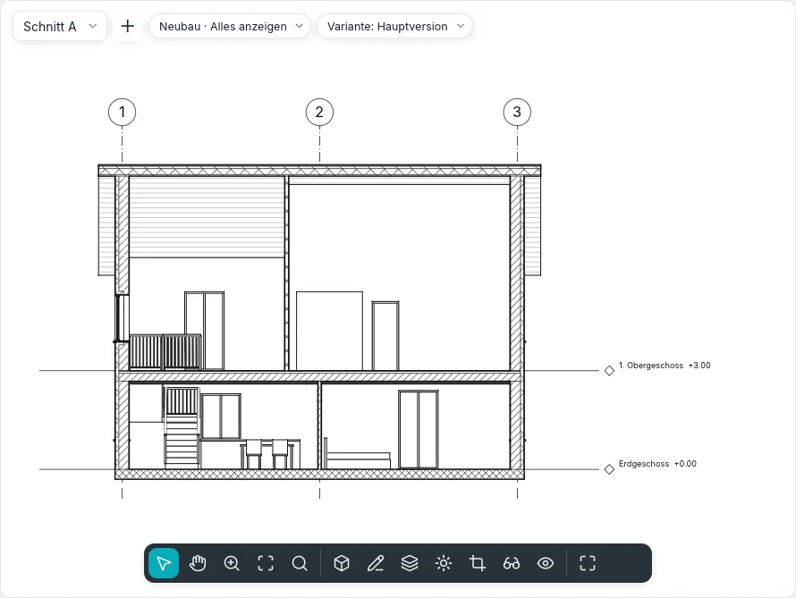
Ansicht zuschneiden beschneidet die Ansicht auf ihren Zuschneidebereich, Zuschneidebereich anzeigen zeichnet den Bereich; ziehen Sie an seinen Kanten, um die Größe zu ändern. Um die Größe einzugeben: Eigenschaften ▸ Zuschnittgröße ▸ Bearbeiten…, dann Breite und Höhe; der Bereich behält seine Mitte.
Ausblenden und Isolieren
Vorübergehend isolieren (die Brille in der Ansichtssteuerungsleiste) wirkt auf die gewählten Elemente, nur in der aktiven Ansicht, und ändert das Projekt nicht:
| Befehl | Kürzel | Was sichtbar bleibt |
|---|---|---|
| Element isolieren | HI |
Nur die gewählten Elemente |
| Element ausblenden | HH |
Alles außer den gewählten Elementen |
| Kategorie isolieren | IC |
Nur die Kategorien der gewählten Elemente |
| Kategorie ausblenden | HC |
Alles außer diesen Kategorien |
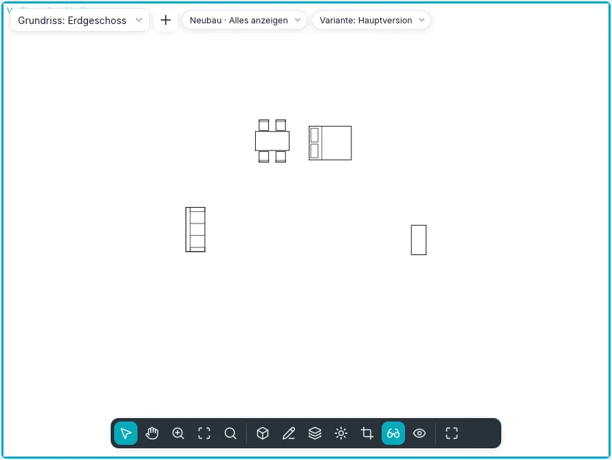
Die Ansicht erhält einen farbigen Rahmen. Jede Anwendung schränkt das Gezeigte weiter ein: Wird ein Element und danach ein weiteres ausgeblendet, sind beide ausgeblendet. Vorübergehendes Isolieren zurücksetzen (HR) zeigt wieder alles; Ausblenden/Isolieren auf Ansicht anwenden blendet dauerhaft aus, was vorübergehend ausgeblendet war.
Um in der Ansicht dauerhaft auszublenden, wählen Sie die Elemente und dann Rechtsklick ▸ In Ansicht ausblenden ▸ Elemente oder Kategorie, oder Ansicht ▸ In Ansicht ausblenden in der kontextabhängigen Karte, oder geben Sie EH (Elemente) beziehungsweise VH (Kategorie) ein.
Verborgene zeigen (die Glühbirne in der Ansichtssteuerungsleiste, oder RH) umrahmt die Ansicht magentafarben und zeigt das Ausgeblendete in Magenta, den Rest im Halbton. Ein ausgeblendetes Element lässt sich dann wählen und wieder einblenden: Rechtsklick ▸ In Ansicht einblenden ▸ Elemente (oder Kategorie). Klicken Sie erneut auf die Glühbirne oder geben Sie RH ein, um den Modus zu verlassen.
Sichtbarkeit und Grafik
Ansichten ▸ Grafik ▸ Sichtbarkeit und Grafik (oder VG, oder Eigenschaften ▸ Überschreibungen Sichtbarkeit/Grafik ▸ Bearbeiten…) zeigt für die aktive Ansicht eine Zeile je Kategorie:
- das Kontrollkästchen blendet die Kategorie ein oder aus; Modellkategorien in dieser Ansicht anzeigen blendet alle ein oder aus;
- Projektionslinien und Schnittlinien: Überschreiben… legt Stärke, Farbe und Muster fest;
- Oberflächenmuster und Schnittmuster: die Muster des Materials, ausgeblendet, in einer anderen Farbe oder durch ein anderes Füllmuster ersetzt;
- Halbton mischt die Linien mit dem Hintergrund;
- Transparent macht die Oberflächen in der 3D-Ansicht durchsichtig;
- Detail zeichnet die Kategorie mit einem anderen Grad als die Ansicht.
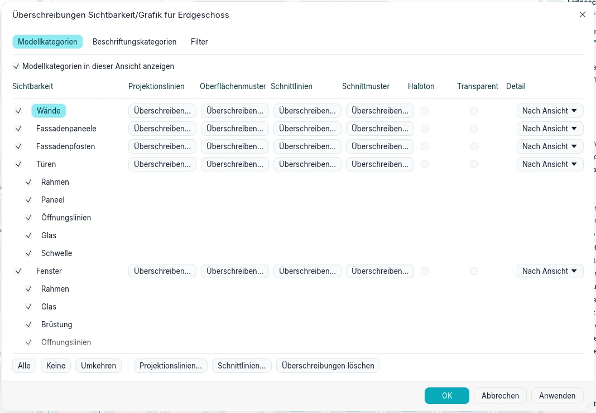
Überschreibungen löschen setzt die gewählten Zeilen auf die Stile nach Kategorie zurück. Änderungen sind sofort zu sehen: Anwenden behält sie und lässt das Fenster offen, Abbrechen (oder das × des Fensters) nimmt zurück, was nicht angewendet wurde, OK behält sie und schließt.
Ein einzelnes Element kann in einer Ansicht eigene Grafik haben: Wählen Sie es und dann Rechtsklick ▸ Benutzerdefinierte Grafik ▸ Nach Element… (oder die Gruppe Ansicht der kontextabhängigen Karte). Ansichtsspezifische Elementgrafiken bietet Sichtbar, Halbton, Transparent, die Oberflächen- und Schnittmuster sowie die Projektions- und Schnittlinien. Sie gelten nur in dieser Ansicht, über denen der Kategorie und der Filter.
Filter
Ansichten ▸ Grafik ▸ Filter listet die Filter des Projekts auf: Neu, Duplizieren, Umbenennen, Löschen. Ein Filter hat Kategorien und bis zu vier Regeln für deren Parameter, die ein Element alle erfüllen muss.
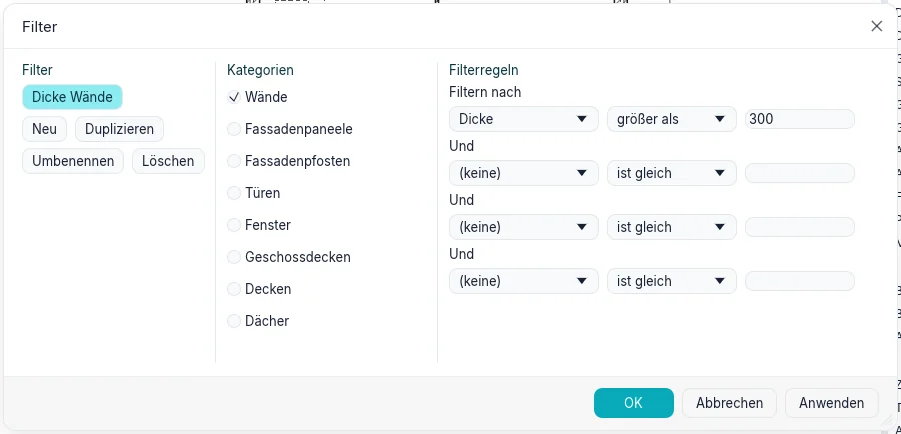
In Sichtbarkeit und Grafik ▸ Filter wendet Hinzufügen einen Filter auf die Ansicht an; seine Zeile legt dann Sichtbarkeit, Linien, Halbton und Transparent für die Elemente fest, die ihn erfüllen. Wo Filter sich widersprechen, gewinnt der weiter oben in der Liste: Nach oben und Nach unten verschieben den gewählten Filter.
Ansichtsvorlagen
Ansichten ▸ Grafik ▸ Ansichtsvorlagen ▸ Vorlage aus aktueller Ansicht erstellen speichert Maßstab, Detail, Grafikstil, Schnitthöhen und Grafik der Ansicht unter einem Namen als Vorlage. Ansichtsvorlagen ▸ Vorlage auf aktuelle Ansicht anwenden überträgt sie auf eine andere Ansicht derselben Art: einen Grundriss (auch einen zweiten Grundriss einer Ebene), einen Schnitt oder eine Gebäudeansicht oder eine 3D-Ansicht. Eine Ansicht folgt späteren Änderungen ihrer Vorlage nicht, bis diese erneut angewendet wird, und die Grafik einzelner Elemente ist nie Teil einer Vorlage.
Ein neues Projekt beginnt mit zwei Vorlagen, Architektur - Grundriss und Architektur - Schnitt und Ansicht, die jeder neuen Ansicht ihrer Art zugewiesen werden: Grundrisse, Deckenpläne, Schnitte und Ansichten werden nur mit Linien gezeichnet, mit den Schnittmustern der Materialien am Geschnittenen und ihren Oberflächenmustern am Sichtbaren, ohne Farbfüllungen und ohne Schatten. Sie tragen den Grafikstil und die Sonne, sodass eine neue Ansicht den Maßstab, die Detailgenauigkeit und den Ansichtsbereich behält, mit denen sie erstellt wird; wer sie ändert, ändert den Beginn neuer Ansichten. Flächenpläne behalten ihr Farbschema.
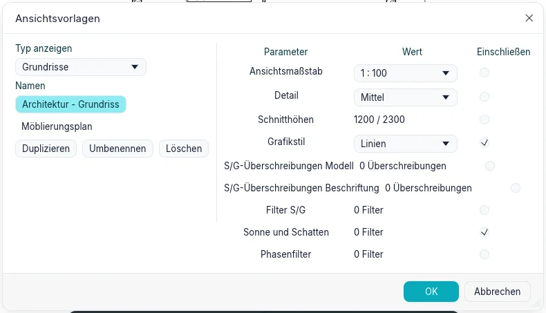
Ansichten verwalten
Klicken Sie im Projektindex mit der rechten Maustaste auf eine Ansicht:
- Ansicht duplizieren ▸ Duplizieren kopiert die Ansicht mit ihren Eigenschaften; Mit Detaillierung duplizieren kopiert auch ihre Bemaßungen, Texte, Tags und 2D-Details. Die Kopie öffnet sich;
- Umbenennen… fragt nach dem neuen Namen (Ansicht umbenennen); Namen bleiben unter den Ansichten eindeutig.
Ansichten ▸ Fenster ▸ Nebeneinander zeigt alle geöffneten Ansichten nebeneinander und füllt den Zeichenbereich: Bei drei Fenstern liegt das aktive links in voller Höhe und zwei sind rechts übereinander angeordnet.
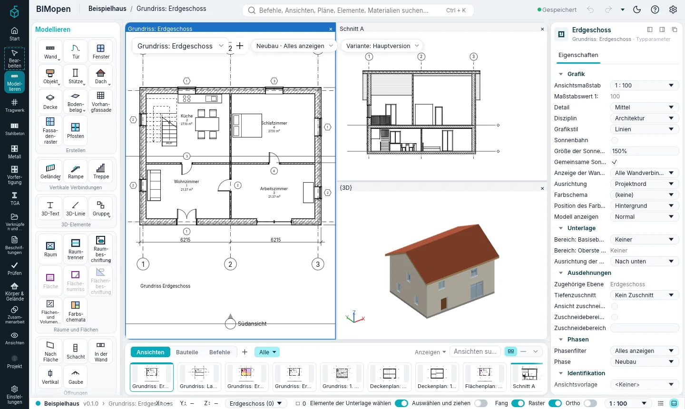